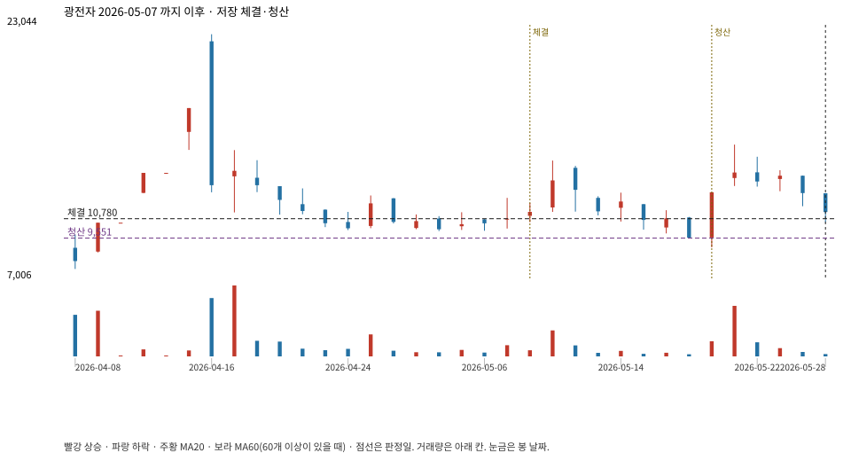

계좌를 다시 돌리지 않았다. 아래는 저장된 주문·체결·청산·비용·손익이다.

{
"case_id": "8745143d850b6870",
"status": "closed",
"trade": {
"symbol": "017900.KS",
"signal_date": "2026-05-07",
"quantity": 936,
"entry": 10780,
"stop": 9556,
"target": 22450,
"planned_risk": 1169166.2317919992,
"reserved_cash": 10100170.079999998,
"fill": {
"date": "2026-05-08",
"price": 10780,
"fee": 10090.08
},
"exit": {
"date": "2026-05-20",
"price": 9551.222,
"reason": "stop",
"net_pnl": -1169166.2317919992,
"ambiguous_bar": false
}
},
"cost": "research fee 10bp each side, slippage 5bp; amounts below are the stored ledger, not a new run",
"chart": "c\/8745143d850b6870.svg"
}